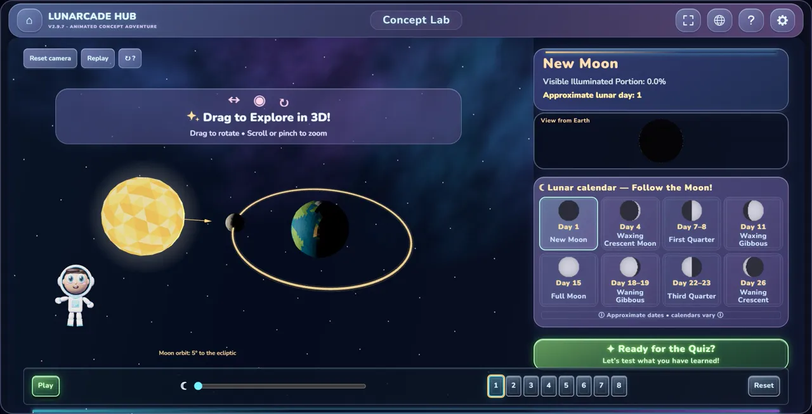
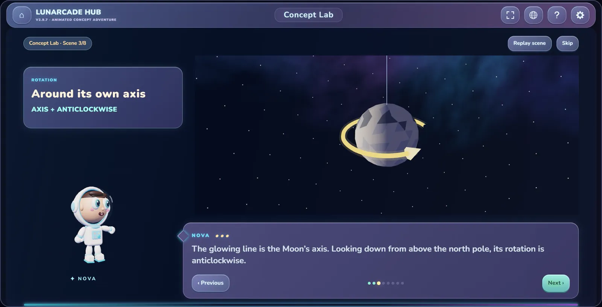
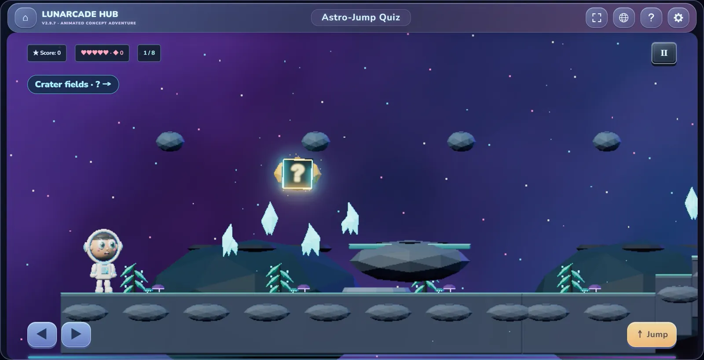
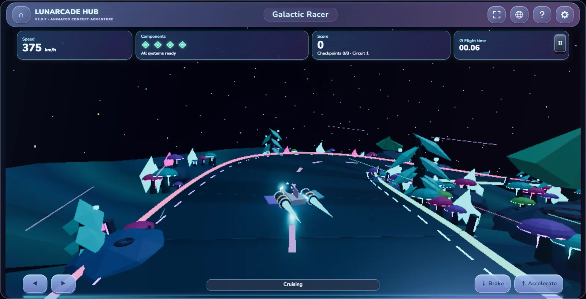
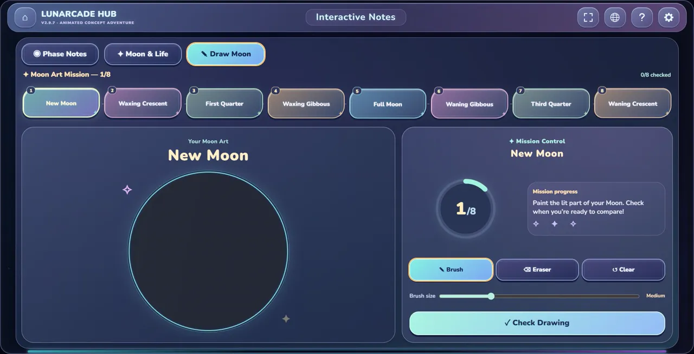
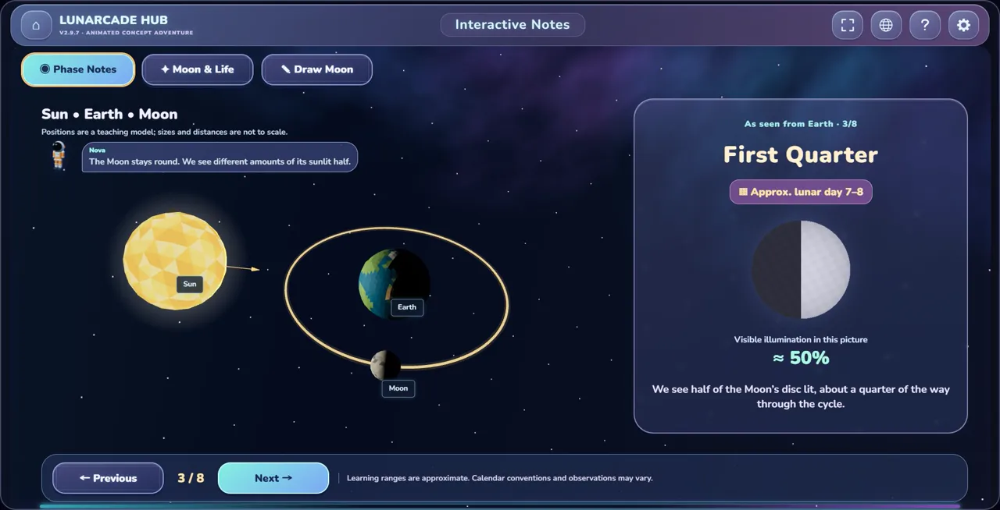

Windows
- Version
- 2.9.7
- Download
- 131 MB
- Needs
- Windows 10 or 11, 64-bit
LunarCade-2.9.7-windows.exe
LunarCade Hub turns Moon phases, a Year 5 Science topic, into a game. Pupils watch the Moon move in 3D, prove what they learned in a quiz and a space race, then draw every phase themselves. In English, Bahasa Melayu and 中文.
No download needed on iPhone or any computer: play online in your browser
Version 2.9.7Windows 131 MBAndroid 30 MBWorks offline
In the Concept Lab, Nova tells the story in eight short animated scenes: the Moon spinning on its axis, its journey around Earth, and why we always see the same side. Then pupils take over a 3D Sun, Earth and Moon, drag it around, and scrub through a whole month.


The Astro-Jump Quiz is a platformer: jump into a gold block to open a question, five lives, no time limit. In Galactic Racer, every checkpoint shows a phase and a date, and pupils steer through the Moon picture that matches. Scores go on a shared live leaderboard under a nickname. Nobody needs an account.


Interactive Notes go through the eight phases one at a time: where the Moon is, what we see from Earth, and roughly which day of the lunar month it is. In Draw the Moon, pupils paint the lit part of each phase and press Check Drawing to compare it with the real shape.


The apps hold the whole game, so they play with no internet at all. Scores upload to the leaderboard the next time the device is online.
LunarCade-2.9.7-windows.exe
Nothing to install. On iPhone, open it in Safari, tap Share, then Add to Home Screen to keep Nova one tap away.
Play onlineUsing a Mac? Download for macOS
0
No reviews yet. Played it at home or in class? Tell other parents and teachers how it went.
Reviews could not load. Check your connection and try again.
The apps are not from an app store, so your device asks you to confirm once. This is what you will see.
Twenty nine and a half days from new Moon to new Moon. LunarCade Hub covers every one of them.